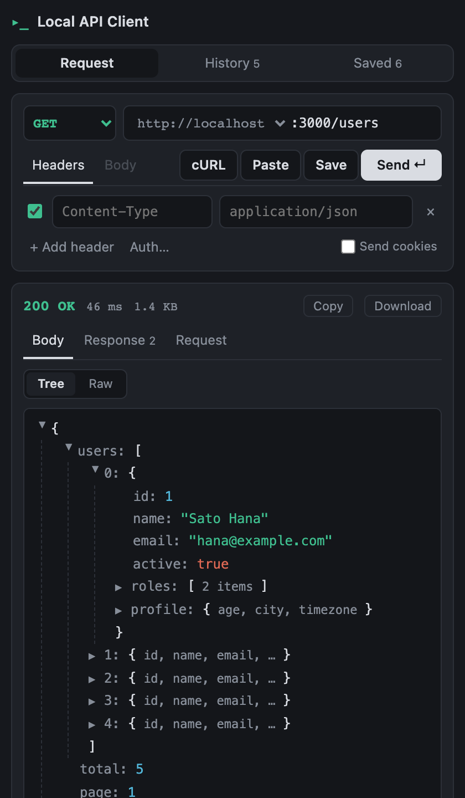

Chrome のサイドパネルで動く、localhost 専用のミニマルな REST クライアントです。リクエストを組んで送り、レスポンスをツリーで読む。アカウントもクラウドも要らず、データはマシンから出ません。

GET、POST、PUT、PATCH、DELETE、HEAD、OPTIONS。ヘッダーは行ごとにオン・オフできます。
キーと値の行を JSON かフォームとして送る。生テキストを貼って一クリックで整形もできます。
届いた分から順に表示するので、SSE や長い応答もそのまま。Cancel しても途中までの内容は残ります。
ドキュメントや DevTools、AI の出力から。メソッド・ヘッダー・本文が埋まります。逆向きの curl コピーも。
Bearer / Basic は一クリック。Chrome が持つ localhost の Cookie は、オンにしたときだけ送ります。
直近 30 件をレスポンスごと。保存はグループ分けでき、JSON で書き出しと取り込みができます。
Web 版の API クライアントはプロキシやエージェント無しでは localhost に届かず、デスクトップ版の多くはアカウントとクラウド同期が前提です。
この拡張機能が Chrome に求める権限は sidePanel と storage の 2 つと、localhost / 127.0.0.1 へのアクセスだけです。それ以外のホストへのリクエストは、送信前に拒否されます。
収集も送信もしません。解析、クラッシュレポート、クラウド同期、リモートコードはありません。入力した内容はすべて、お使いのマシンの chrome.storage.local に留まります。
拡張を入れて、適当なローカルサーバーを立てて、送るだけです。
python3 -m http.server 3000
# パネル側: GET http://localhost :3000/リポジトリには、ユーザー一覧、Cookie を発行するログイン、Bearer が要る経路、SSE のストリームを持つデモ API も入っています: npm run demo